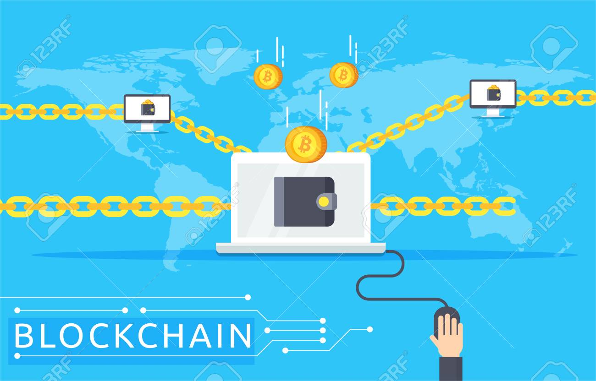

Blockchain là một công nghệ cho phép truyền tải dữ liệu một cách an toàn dựa vào hệ thống mã hoá vô cùng
phức tạp, tương tự cuốn sổ cái kế toán của một công ty, nơi mà tiền mặt được giám sát chặt chẽ. Trong
trường hợp này Blockchain là một cuốn sổ cái kế toán hoạt động trong lĩnh vực kỹ thuật số.
Blockchain sở hữu tính năng vô cùng đặc biệt đó là việc truyền tải dữ liệu không đòi hỏi một trung gian để
xác nhận thông tin. Hệ thống Blockchain tồn tại rất nhiều nút độc lập có khả năng xác thực thông tin mà
không đòi hỏi “dấu hiệu của niềm tin”.
Thông tin trong Blockchain không thể bị thay đổi và chỉ được bổ sung thêm khi có sự đồng thuận của tất cả
các nút trong hệ thống. Đây là một hệ thống bảo mật an toàn cao trước khả năng bị đánh cắp dữ liệu. Ngay cả
khi một phần của hệ thống Blockchain sụp đổ, những máy tính và các nút khác sẽ tiếp tục bảo vệ thông tin và
giữ cho mạng lưới tiếp tục hoạt động.
Công nghệ Blockchain có thể nói là sự kết hợp giữa 3 loại công nghệ bên dưới
Mật mã học: Sử dụng public key và hàm hash function để đảm bảo tính minh bạch, toàn vẹn và riêng tư.
Mạng ngang hàng: Mỗi một nút trong mạng được xem như một client và cũng là server để lưu trữ bản sao
ứng dụng.
Lý thuyết trò chơi: Tất cả các nút tham gia vào hệ thống đều phải tuân thủ luật chơi đồng thuận (PoW,
PoS…) và được thúc đẩy bởi động lực kinh tế.
NGUYÊN LÝ HOẠT ĐỘNG CỦA BLOCKCHAIN
Công nghệ blockchain có lẽ là phát minh tốt nhất từ chính Internet. Nó cho phép trao đổi giá trị mà không
cần sự tin tưởng hoặc chứng cứ làm tin. Hãy tưởng tượng bạn và tôi đặt cược 50$ cho thời tiết ngày mai ở
San Francisco. Tôi đặt cược trời sẽ nắng, bạn cược là mưa. Hôm nay chúng ta có ba tùy chọn để quản lý giao
dịch này:
Chúng ta có thể tin tưởng lẫn nhau. Mưa hoặc nắng, người thua sẽ trả 50 đô la cho người chiến thắng.
Nếu chúng ta là bạn, đây có thể là một cách hay để đặt cược. Tuy nhiên, dù là bạn bè hay người lạ thì vẫn
không thể dễ dàng trả tiền cho người kia.
Chúng ta có thể biến tiền cược thành một hợp đồng. Với một hợp đồng tại chỗ, cả hai bên sẽ dễ phải trả
tiền hơn, tuy nhiên, nếu một trong hai người quyết định không trả, người chiến thắng sẽ phải trả thêm
tiền để trang trải chi phí pháp lý và bản án có thể mất một thời gian dài. Đặc biệt với một lượng tiền
mặt nhỏ, điều này dường như không phải là cách tối ưu để quản lý giao dịch.
Chúng ta có thể nhờ đến một bên thứ ba trung lập. Mỗi người trong chúng ta đưa 50 đô la cho một người
thứ ba, cô ấy sẽ đưa tổng số tiền cho người chiến thắng.
Nhưng, cô ấy cũng có thể bỏ trốn với tất cả số tiền. Vì vậy, chúng ta sẽ chọn một trong hai lựa chọn đầu
tiên: tin tưởng hoặc hợp đồng.
Cả sự tin tưởng và hợp đồng đều không phải là giải pháp tối ưu. Chúng ta không thể tin tưởng vào người lạ
và thực thi hợp đồng đòi hỏi thời gian và tiền bạc. Công nghệ blockchain là thú vị vì nó cung cấp cho chúng
ta lựa chọn thứ ba, an toàn, nhanh chóng và rẻ tiền.
Blockchain cho phép viết một vài dòng code, chương trình chạy trên blockchain, mà cả hai chúng ta gửi 50
đô la vào đó. Chương trình này sẽ giữ 100 đô la an toàn và kiểm tra thời tiết ngày mai một cách tự động
trên nhiều nguồn dữ liệu. Nắng hoặc mưa, nó sẽ tự động chuyển toàn bộ số tiền cho người chiến thắng. Mỗi
bên có thể kiểm tra hợp đồng logic, và vì nó đang chạy trên blockchain nên nó không thể thay đổi hoặc ngừng
lại. Nỗ lực này có thể là quá cao đối với một giao dịch 50 đô la, nhưng hãy tưởng tượng khi bán nhà hoặc
công ty.
Đặc điểm chính của Blockchain
Không thể làm giả, không thể phá hủy các chuỗi Blockchain: theo như lý thuyết thì chỉ có máy tính lượng
tử mới có thể giải mã Blockchain và công nghệ Blockchain biến mất khi không còn Internet trên toàn cầu.
Bất biến: dữ liệu trong Blockchain không thể sửa (có thể sửa nhưng sẽ để lại dấu vết) và sẽ lưu trữ mãi
mãi.
Bảo mật: Các thông tin, dữ liệu trong Blockchain được phân tán và an toàn tuyệt đối.
Minh bạch: Ai cũng có thể theo dõi dữ liệu Blockchain đi từ địa chỉ này tới địa chỉ khác và có thể
thống kê toàn bộ lịch sử trên địa chỉ đó.
Hợp đồng Thông minh: là hợp đồng kỹ thuật số được nhúng vào đoạn code if-this-then-that (IFTTT), cho
phép chúng tự thực thi mà không cần bên thứ ba.
CÁC LOẠI BLOCKCHAIN
Hệ thống Blockchain chia thành 3 loại chính:
Public: Bất kỳ ai cũng có quyền đọc và ghi dữ liệu trên Blockchain. Quá trình xác thực giao dịch trên
Blockchain này đòi hỏi phải có hàng nghìn hay hàng vạn nút tham gia. Do đó để tấn công vào hệ thống
Blockchain này là điều bất khả thi vì chi phi khá cao. Ví dụ: Bitcoin, Ethereum…
Private: Người dùng chỉ được quyền đọc dữ liệu, không có quyền ghi vì điều này thuộc về bên tổ chức thứ
ba tuyệt đối tin cậy. Tổ chức này có thể hoặc không cho phép người dùng đọc dữ liệu trong một số trường
hợp. Bên thứ ba toàn quyền quyết định mọi thay đổi trên Blockchain. Vì đây là một Private Blockchain, cho
nên thời gian xác nhận giao dịch khá nhanh vì chỉ cần một lượng nhỏ thiết bị tham gia xác thực giao dịch.
Ví dụ: Ripple là một dạng Private Blockchain, hệ thống này cho phép 20% các nút là gian dối và chỉ cần
80% còn lại hoạt động ổn định là được.
Permissioned: Hay còn gọi là Consortium, một dạng của Private nhưng bổ sung thêm một số tính năng nhất
định, kết hợp giữa “niềm tin” khi tham gia vào Public và “niềm tin tuyệt đối” khi tham gia vào Private.
Ví dụ: Các ngân hàng hay tổ chức tài chính liên doanh sẽ sử dụng Blockchain cho riêng mình.

CÁC ỨNG DỤNG CỦA BLOCKCHAIN TRONG ĐỜI SỐNG
Ứng dụng hữu ích đầu tiên được biết đến rộng rãi từ công nghệ blockchain có lẽ là Bitcoin và các loại tiền
điện tử, nhưng hiện tại Blockchain đang cách mạng hóa hầu hết các ngành công nghiệp. Dưới đây là một vài ví
dụ thiết thực về ứng dụng của công nghệ blockchain trong đời sống.
Ứng dụng blockchain trong thương mại điện tử
Warranteer: Là một ứng dụng blockchain cho phép người tiêu dùng dễ dàng truy cập thông tin về sản phẩm
họ đã mua và nhận hỗ trợ dịch vụ trong trường hợp có trục trặc sản phẩm.
Blockpoint: Là một ứng dụng đơn giản hóa việc tạo ra các hệ thống thanh toán và chấp nhận ví điện tử,
chương trình khách hàng thân thiết, thẻ quà tặng và các chức năng khác.
Loyyal: Được hỗ trợ bởi công nghệ blockchain và hợp đồng thông minh, nền tảng dịch vụ khách hàng thân
thiết và tích điểm thưởng này tạo ra nhiều chương trình tùy chỉnh hơn, cho phép khách hàng tích điểm
thưởng từ nhiều thương hiệu khác nhau.
Ứng dụng blockchain trong nông nghiệp
Food industry: Là ứng dụng Blockchain có thể cải thiện tính minh bạch và hiệu quả trong việc tìm ra
những loại thực phẩm có thể bị ô nhiễm và ở đâu trong suốt chuỗi cung ứng.
OriginTrail: Là một nền tảng blockchain cho phép người tiêu dùng biết hàng hóa thực phẩm mà họ mua đến
từ đâu và cách chúng được sản xuất.
Ứng dụng blockchain trong dịch vụ tài chính, ngân hàng
Bitcoin Atom: Là một nhánh mới của Bitcoin cho phép trao đổi tiền mã hóa dễ dàng mà không tốn phí giao
dịch và không thể bị tấn công khi giao dịch, khiến Bitcoin thực sự được phân cấp lại. Công nghệ này dựa
trên các hoán đổi nguyên tử (atomic swaps) – được xem là một công cụ vô giá để trao đổi các đồng tiền mã
hóa và không cần phải có một bên thứ ba đáng tin cậy. Nhưng hiện tại, việc áp dụng rộng rãi các giao dịch
hoán đổi nguyên tử đã bị ngăn chặn vì chúng đòi hỏi phải có kỹ năng kỹ thuật cao; Bitcoin Atom có thể
giải quyết vấn đề này một phần nào đó.
Securrency: Đây là một nền tảng giao dịch tiền mã hóa và một vài loại tài sản, bao gồm cả những tài sản
không hoán đổi thành tiền mặt, được trao đổi thông qua token của Securrency. Dự án cho phép tiền mã hóa
được giao dịch bên ngoài các giao dịch chuyên dụng của chúng.
Ripple: Ripple nhắm đến việc trở thành một nhà cung cấp giải pháp thanh toán toàn cầu bằng cách kết nối
ngân hàng, nhà cung cấp dịch vụ thanh toán, doanh nghiệp và các giao dịch tài sản kỹ thuật số, cho phép
giải quyết ngay tức thì, theo nhu cầu trên toàn cầu
ABRA: Là một ứng dụng toàn cầu và ví tiền mã hóa cho phép bạn mua, đầu tư và trữ 20 loại tiền mã hóa,
bao gồm Bitcoin, ethereum, litecoin…
Aeternity: Là một nền tảng blockchain có khả năng mở rộng cao này có thể được sử dụng cho bất kỳ ứng
dụng nào yêu cầu tốc độ giao dịch cao, bao gồm các hợp đồng thông minh được tạo ra từ các thanh toán
chuỗi, nano và vi mô.
Ứng dụng blockchain trong giáo dục, y tế
MedicalChain: Là công ty trong lĩnh vực chăm sóc sức khỏe đầu tiên sử dụng công nghệ blockchain để tạo
thuận lợi trong việc lưu trữ và sử dụng hồ sơ y tế điện tử để cung cấp trải nghiệm y học từ xa
(telemedicine) hoàn chỉnh. Họ là các bác sĩ thực tế trong hệ thống chăm sóc sức khỏe của Anh và muốn thay
đổi hệ thống này từ bên trong.
MedRec: Để cung cấp cho bất kỳ nhà cung cấp dịch vụ y tế truy cập an toàn vào hồ sơ của bệnh nhân,
MedRec sử dụng blockchain để tiết kiệm thời gian, tiền bạc và các quy trình lặp lại trong việc tiến hành
thủ tục giữa các cơ sở và nhà cung cấp khác nhau. Bệnh nhân cũng có thể truy cập vào hồ sơ y tế của họ để
nghiên cứu các đơn vị cung cấp dịch vụ y tế.
PGS.TS Phạm Văn Hải - phóng sự vê Block chain với VTC